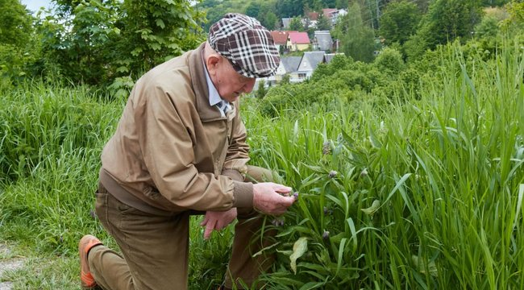
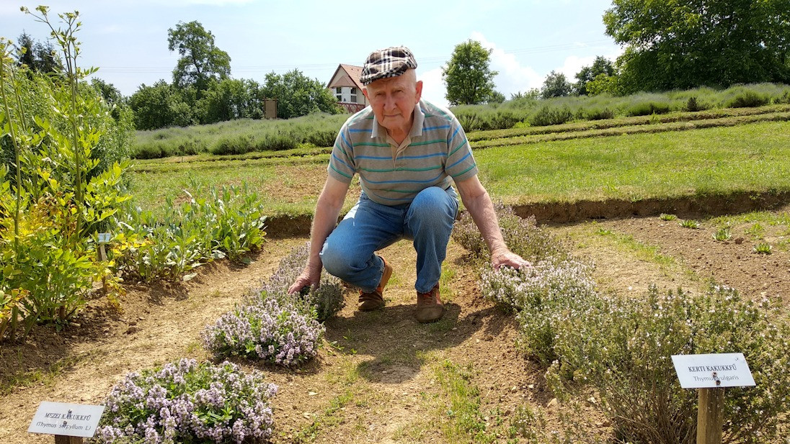
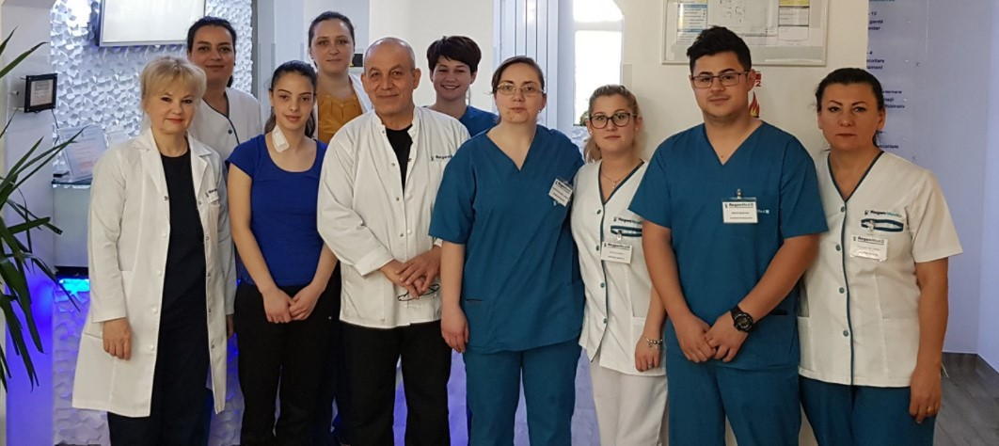
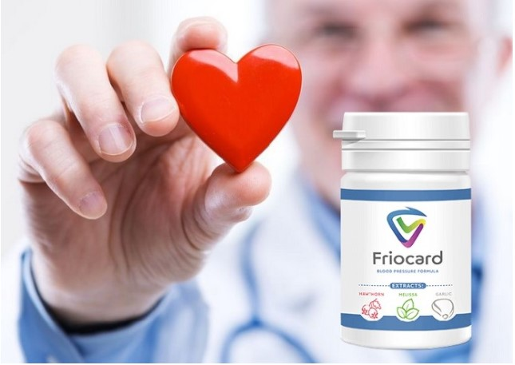
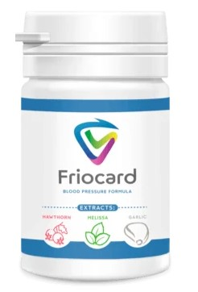
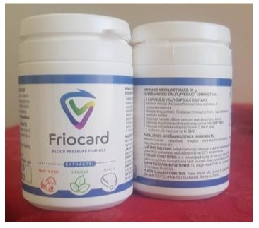
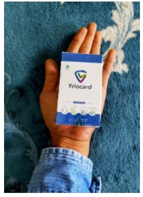
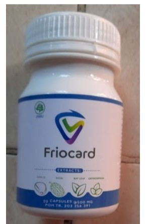

EGY GYÓGYNÖVÉNYSZAKÉRTŐ OLYAN RECEPTET ÁLLÍTOTT ÖSSZE A MAGAS VÉRNYOMÁS ELLEN, AMELYÉRT A GYÓGYSZERGYÁRAK 100 000 EURÓT IS HAJLANDÓAK FIZETNI
Szabó György a gyógynövények tanulmányozásának szentelte életét. Sikerült létrehoznia egy olyan receptet, amely 100%-ban hatékony a magas vérnyomás ellen és teljesen biztonságos az egészségre. A felfedezés egyedülálló, még a gyógyszergyárak is érdeklődnek iránta. További részletekért lásd cikkünket.
Ez az egyedülálló ember több mint 35 éve tanulmányozza a helyi flóra gyógyító tulajdonságait. És nagyon sikeresen! Tinktúráiról, főzeteiről és gyógynövénygyűjteményeiről igaz legendák keringenek. Élete során emberek ezreinek segített különböző betegségekben, a népi gyógyászat és a gyógynövényekkel, gyökerekkel, levelekkel, növényekkel végzett kísérletei alapján.
Tudásának és képességeinek híre messze túlterjedt Magyarországon. Különböző országokból érkeznek hozzá emberek. Azok, akik csalódtak a hagyományos orvoslásban, és hisznek a gyógynövények erejében. Segít gyomorproblémák, szívproblémák, női problémák, ízületi problémák, prosztataproblémák, valamint fogyókúrás problémák esetén. A legkeresettebb gyógynövényei és főzetei azonban a magas vérnyomásban szenvedők és a feszültségproblémákkal küzdők számára készültek.
Milyen veszélyeket rejt a magas vérnyomás?
Minél magasabb a vérnyomás, annál nagyobb a kockázata a szív vagy a főbb szervek, például az agy vagy a vese károsodásának. A magas vérnyomás a szívbetegségek és a stroke legfőbb oka világszerte, amely megelezhető.
A kontrollálatlan magas vérnyomás szívrohamhoz, szapora szívveréshez és végül szívelégtelenséghez vezethet. Az erekben tágulatok (aneurizmák) alakulhatnak ki, és olyan sebezhető pontok alakulnak ki, ahol az erek nagyobb valószínűséggel eltömődnek és megrepednek.
Az erekben lévő nyomás agyvérzéshez és stroke-hoz vezethet. A hipertónia továbbá veseelégtelenséget, vakságot és kognitív károsodást is okozhat.
A magas vérnyomás egészségügyi következményeit más tényezők is súlyosbíthatják, amelyek növelik a szívroham, a stroke és a veseelégtelenség esélyét. Ezek közé a tényezők közé tartozik a dohányzás, az egészségtelen táplálkozás, az alkoholfogyasztás, a testmozgás hiánya és a stressz, valamint az elhízás, a magas koleszterinszint és a cukorbetegség.
Együttműködés a hagyományos gyógyászattal
 Szabó György elismert képességei orvosi körökbe is eljutottak. Sok tudós és orvos érdeklődött a népi gyógyító tudása iránt. Különösen a magas vérnyomás elleni hatásos gyógynövények iránt. Ez a probléma ma már nemcsak az időseket, hanem a fiatalokat is érinti.A tudományos közösség gyógynövényekkel kapcsolatos tanácsokat kértek a füvesembertől. Ő pedig örömmel osztotta meg a tudását, mert megértette, hogy ez az emberek hasznára válik (számára az emberek segítése a legfontosabb).
A tudósok laboratóriumi körülmények között tanulmányozták a gyógynövények különböző kombinációinak a vérnyomásra gyakorolt hatását. És elcsodálkoztak az eredményen!
A különböző növények, esszenciák és kivonatok egyedülálló kombinációja egy TERMÉSZETES és TELJESEN BIZTONSÁGOS készítmény létrehozását tette lehetővé a magas vérnyomás ellen.
Ismerje meg a Friocardot
A készítmény befolyásolja a betegség okát, ami lehetővé teszi, hogy teljesen megszabaduljon a magas vérnyomástól. A termék hatóanyagának köszönhetően már a használat első hat órájában megszünteti a tüneteket.
Az érrendszeri tónus egy kúra után teljesen helyreáll. Így a Friocard a magas vérnyomás bármely szakaszában hatékony. A termék klinikai vizsgálatokon esett át.
A Friocard kapszula bármilyen gyógyszerrel kombinálható. Nincs függőség és elvonási szindróma. A Friocard gyorsan hat: a maximális koncentráció a vérben 20 perc után érhető el. A termék nem mérgező, és más készítményekkel kombinálható.
A Friocard három szakaszban működik:
1. Feloldja a szennyeződéseket az erekben
Feloldja az ateroszklerotikus plakkokat, a vérrögöket és a kalcium-meszet. Megnöveli az erek lumenét a
normál érték 99,71%-ára, és helyreállítja a vérkeringést.
2. Megszünteti a rossz keringés következményeit
Megszünteti vagy jelentősen enyhíti az olyan állapotokat, mint a magas vérnyomás, fejfájás, visszér,
trombózis. Eltűnik a fülzúgás, a szédülés, a duzzanat; a látásélesség és a gondolkodás javul. A testsúly
és a zsíranyagcsere normalizálódik.
3. Növeli az erek falának szilárdságát és rugalmasságát
Ez megakadályozza az új plakkok kialakulását, és 11-szeresére csökkenti a stroke kockázatát.
A Friocard forgalmazására külön részleget hoztunk létre, amely az igénylésekkel foglalkozik. Mindazoknak, akik Friocardot szeretnének kapni kézbesítéssel, meg kell adniuk nevüket és elérhetőségüket. Egy tanácsadó ezután felveszi önnel a kapcsolatot, hogy egy megfelelő szállítási időpontot egyeztessen. Mindent a lehető legegyszerűbbé tettünk, hogy mindenki hozzáférhessen a termékhez, még akkor is, ha korábban még nem rendelt semmit online.
Már 2 hónapja forgalmazzuk a Friocardot. Ez idő alatt sok köszönőlevelet kaptunk a magas vérnyomásban szenvedő emberektől. Ez ismét bizonyítja, hogy a termék TÉNYLEG SEGÍT A MAGAS VÉRNYOMÁSBAN SZENVEDŐKNEK!
Kifejezetten olvasóink számára, elhelyezzük a Friocard termék megrendelőlapját
A FRIOCARD MEGRENDELÉSÉHEZ ADJA MEG ADATAIT:
Az akciós ajánlat ig érvényes a nap vége 09.11.2021
Hozzászólások:
Anikó Gazda
Ez hihetetlen! A nagymamám, amikor még élt, mindig azt mondta nekem, hogy a gyógynövényeknek gyógyító erejük van, és minden betegséget le tudnak győzni. Régóta szenvedek magas vérnyomásban, de ilyen készítményről még nem hallottam, rendelnem kell!
István Szalai
Láttam egy cikket az interneten erről a füvesemberről, aki nagyon híres a gyógynövényes gyűjteményéről. Sokan fordulnak hozzá segítségért Magyarország minden tájáról.
Gábor Czombos
Hat hónapja stresszben élek - a feleségem vérnyomása esténként megemelkedik. Minden alkalommal, amikor mentőt hívunk, imádkozunk, hogy időben megérkezzenek... Egy hete rendeltük meg a Friocardot és csoda történt! Az első napon a feleségem vérnyomása nem emelkedett. Végre mosolyt látok az arcán. Köszönjük ezt a terméket!
Krisztina Mészáros
A magas vérnyomás nem egy kellemes betegség. Állandóan különböző vérnyomáscsökkentő szereket szedek, és nemrégiben áttértem a Friocardra - egy nap úgy döntöttem, hogy megveszem, és azonnal megtetszett. Működik, és a vérnyomásom nagyon jó, reggel beveszek egy tablettát, és napközben, amíg nem erőltetem meg magam túlságosan, a normán belül marad.
László Lauf
Amint a vérnyomásom elkezdett zavarni, elmentem egy kardiológus szakértőhöz. A Friocardot ajánlotta, mint modern és olcsó terméket. Nagyon kellemesen meglepett az ár és a termék egyaránt megfelelő volt. Most már napi 1 tablettát szedek, és nem kell aggódnom a magas vérnyomás miatt.
Eleonóra Kruppai
Köszönöm az ajánlást. Még soha nem hallottam erről a termékről, de szeretném kipróbálni.
Krisztián Bene
Őszintén szólva, ez egy nagyszerű termék! Megrendeltem, amint elolvastam ezt a cikket. Amikor megkaptam a Friocardot, azonnal elkezdtem szedni. Még aznap este észrevettem, hogy javult az egészségem. A vérnyomásom most már normális volt. Normális, de nem mint egy magas vérnyomású embernél, hanem mint egy normális embernél. Az állapotom a szedése után nagyszerű. Erősebbnek érzem magam és jobban alszom.
Zsuzsanna Bardus
Artériás magas vérnyomásom és szívelégtelenségem van, és állandóan gyógyszert kell szednem. A Friocard az én életmentőm, mindig magamnál hordom, segít gyorsan csökkenteni a magas vérnyomásomat, és enyhíti a szívem terhelését. Olcsó és elég gyorsan segít, a fejfájásom körülbelül 5 perc alatt elmúlik.
Judit Pengő
Édesanyámat a múlt hónapban mentőautóval vitték el infarktus előtti állapotban. Az orvosok szerint a vérnyomás-emelkedés miatt. Azóta állandóan tablettákat szed, és állandóan ideges, és naponta 30-szor méri a vérnyomását... Egyszerűen nincs ideje normális életre! Bármennyi pénzért hajlandó vagyok megvenni, amíg működik és segít az anyukámnak!!!
István Székely
Minden szót megerősítek - a Friocard kiváló, az egyik leggazdaságosabb és leghatékonyabb termék!
Ágnes Kosán
Köszönjük a nagyszerű híreket! Minden hipertóniás beteg olvashat és tanulhat valami újat a megoldásról.